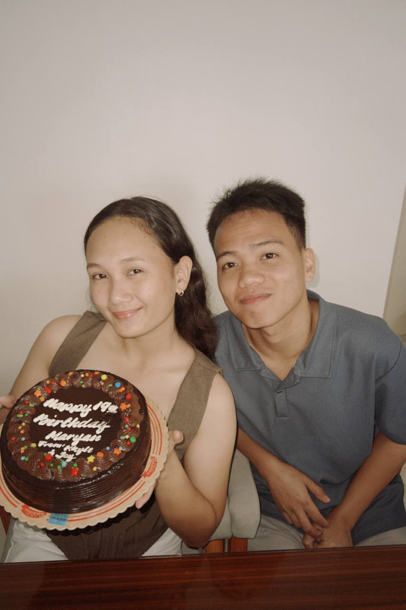

 Happy 19th Birthday to my dearest best friend 🥳 MARIMAR🐚, No more message na kasi matanda kana ehhh
siguro a little and simple message lang HAAHAHHAHA pero message parin, i would like to say na stay healthy and
stay pretty, wish all the best for you, may god bless you always and yun lang I'm very happy that i have a
friend like you so i cherish this our friendship na sana mag tagal at mas tumibay pa, thank you kasi lagi ka
nanjan kada andar ng ka oahan ko, thank you for your advises, and yeahh sana sana bigyan ka pa ng mahabang buhay
ni god, mabuhay ka hanggat gusto mo walang pumipigil sayo, yun lang we love you marimar my best friend 🥳🤍
Hi marimar my best friend, no long message na specify nalang HAAHHHAHA, i just want to say thank you for being a
good friend saming lahat and also sa pag pa feel ng presence na nanjan ka plagi para samin, i hope mas tagaan
pakag taas na kinabuhi ni lord and unta bisag nag tiguwang naka dili ka mag bag o okay? we love you marimar,
Happy birthday and MBTC🎉🥳
Write to Kh Y Le